Налаштування VLAN в MikroTik, trunk та access порти
Налаштування VLAN у MikroTik
Щоб максимально широко захопити налаштування VLAN, буде створено кілька стендів, де маршрутизатори (роутери) MikroTik будуть перетинатися з іншим мережевим обладнанням:
Налаштування нетегованого(untagged) VLAN у MikroTik, схема тільки access портів
До кожного порту маршрутизатора (роутера) підключатиметься кінцевий клієнт (ПК, принтер, точка доступу). З боку клієнта трафік нетегований, а в момент попадання пакета на порт йому буде присвоюватися тег VLAN ID (тегований трафік). Access порт – це синонім наведеної схеми у виробника такого обладнання як Cisco.
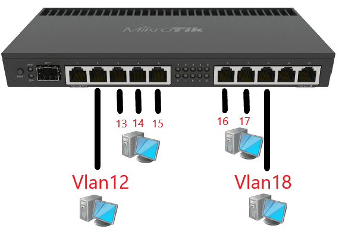
Створення Bridge інтерфейсу за допомогою VLAN
Налаштування знаходиться Bridge→Bridge
Необхідно визначити інтерфейс Bridge, налаштування якого містять параметр Ether. type = 0x8100. Цей параметр вказує на те, що на даному інтерфейсі використовуватиметься тег VLAN.
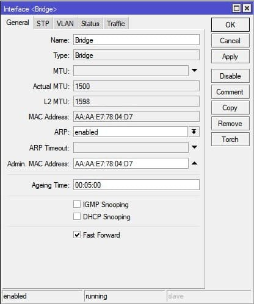
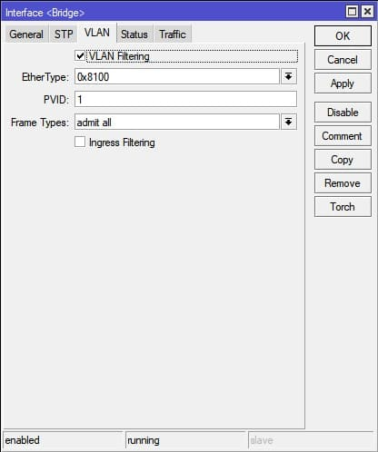
/interface bridge
add admin-mac=AA:AA:E7:78:04:D7 auto-mac=no name=Bridge vlan-filtering=yes
Варто звернути увагу до заповнення параметра Admin MAC Address , це треба взяти у звичку: копіювати згенерований MAC Address відразу після створення Bridge, тобто. до внесення портів. В іншому випадку Admin MAC Address буде довільно змінюватися і на якомусь етапі це може бути на заваді доступності або в роботі маршрутизації.
Створення інтерфейсів VLAN
Налаштування знаходиться Interfaces→VLAN
У створеному VLAN потрібно визначити VLAN ID, а також вказати інтерфейс, на якому він буде присвоюватися. У схемі, де немає центрального Bridge, VLAN потрібно призначити на Bridge інтерфейс 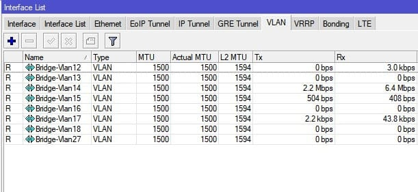
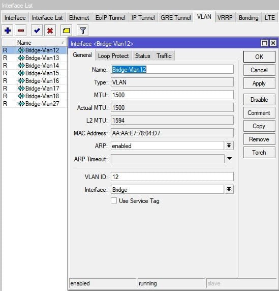
За аналогією створюються всі необхідні інтерфейси.
/interface vlan
add interface=Назва мосту=Bridge-Vlan12 vlan-id=12
add interface=Назва мосту=Bridge-Vlan13 vlan-id=13
add interface=Назва мосту=Bridge-Vlan14 vlan-id=14
add interface=Назва мосту =Bridge-Vlan15 vlan-id=15
add interface=Назва мосту=Bridge-Vlan16 vlan-id=16
add interface=Назва мосту=Bridge-Vlan17 vlan-id=17
add interface=Назва мосту=Bridge-Vlan18 vlan-id= 18
add interface=Bridge name=Bridge-Vlan27 vlan-id=27
Додавання портів до Bridge
Налаштування знаходиться Bridge→Ports
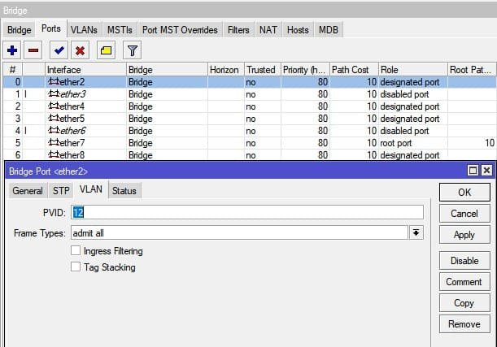
/interface bridge port
add bridge=Інтерфейс мосту=ether2 pvid=12
add bridge=Інтерфейс мосту=ether3 pvid=13
add bridge=Інтерфейс мосту=ether4 pvid=14
add bridge=Інтерфейс мосту=ether5 pvid=15
add bridge=Інтерфейс мосту= ether6 pvid=16
add bridge=Інтерфейс мосту=ether7 pvid=17
add bridge=Інтерфейс мосту=ether8 pvid=18
Для всіх портів потрібно визначити VLAN ID, позначивши ці порти як теговані.
PVID = 12 буде маркувати всі пакети, що надійшли на порт відповідним VLAN ID.
Визначення тегованих (trunk) та нетегованих (access) портів
Налаштування знаходиться Bridge→VLANs
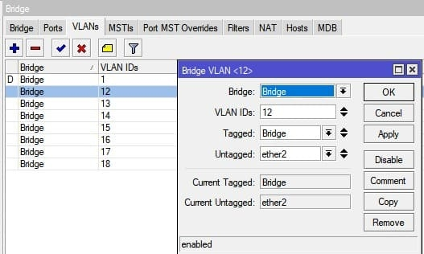
/interface bridge vlan
add bridge=Міст tagged=Міст untagged=ether2 vlan-ids=12
add bridge=Міст tagged=Міст untagged=ether3 vlan-ids=13
add bridge=Міст tagged=Міст untagged=ether4 vlan-ids=14
add bridge=Bridge tagged=Міст untagged=ether5 vlan-ids=15
add bridge=Bridge tagged=Міст untagged=ether6 vlan-ids=16
add bridge=Bridge tagged=Міст untagged=ether7 vlan-ids=17
add bridge=Bridge tagged= Міст untagged=ether8 vlan-ids=18
Tagged=Bridge буде використовувати як тегований (trunk) інтерфейс і пропускатиме через себе VLAN ID 12…18;
Untagged=ether2 визначено як нетегований порт.
Налаштування локальної мережі для VLAN
Мережеві налаштування в даному прикладі не відрізняються від мережевих налаштувань наведених у статті " Базова конфігурація роутера MikroTik → ", з однією поправкою - як інтерфейс призначення потрібно використовувати відповідний VLAN інтерфейс, тобто.
Налаштування локальної IP-адреси для VLAN
Налаштування знаходиться IP→Addresses
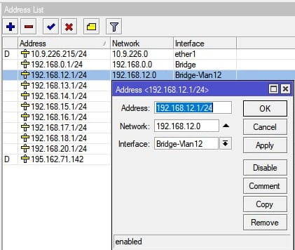
/ip-адреса
додати адресу=192.168.12.1/24 інтерфейс=Міст-Vlan12 мережа=192.168.12.0
Налаштування сервера DHCP для VLAN
Налаштування знаходиться IP→DHCP Server→DHCP
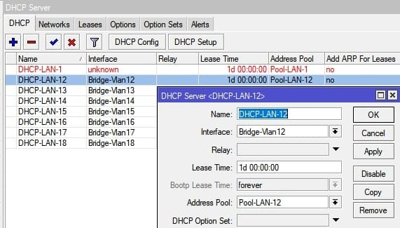
/ip dhcp-server
add address-pool=Pool-LAN-12 disabled=немає інтерфейсу=Bridge-Vlan12 lease-time=\
1d name=DHCP-LAN-12
Налаштування тегованого(tagged) VLAN у MikroTik, схема з комутатором MikroTik(L2)
На ринку пропозицій комутаторів L2 MikroTik займає лідируючі пропозиції при виборі 4-х і 24-х портового комутатора L2. Основними плюсами таких комутаторів є наявність Web-інтерфейсу та можливість працювати з VLAN-ами. Схематично мережа виглядатиме так:

Якщо описати словами схему, то:
- 5-ий порт роутера тегований (trunk);
- Перший порт комутатора L2 тегований (trunk);
- Третій і п'ятий порт комутатора L2 нетеговані (access).
Необхідно зняти примусовий PVID із порту на роутері MikroTik
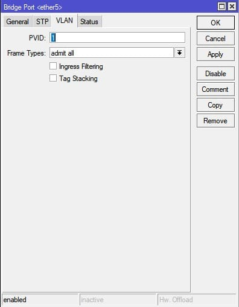
/interface bridge port add bridge=Інтерфейс мосту=ether5 pvid=1
Визначити теговані порти
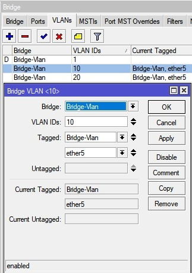
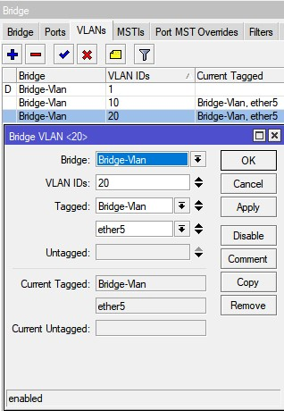
/interface bridge vlan
add bridge=Bridge-Vlan tagged=Bridge-Vlan,ether5 vlan-ids=10
add bridge=Bridge-Vlan tagged=Bridge-Vlan,ether5 vlan-ids=20
Налаштувати теговані (trunk) та нетеговані (access) порти на комутаторі MikroTik L2 з SwOS
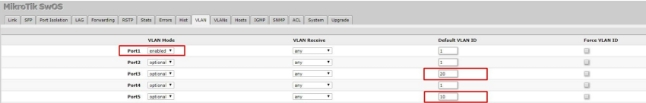
Визначити на яких портах будуть відповідні VLAN з боку MikroTik комутатора L2
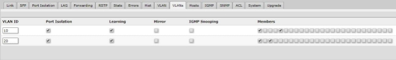
Налаштування VLAN між двома роутерами\комутаторами MikroTik(L3), схема trunk та access портів
Наведена схема також є популярним зв'язуванням, коли маршрутизатор (роутер) MikroTik роздає VLAN через комутатор (або інший роутер MikroTik), на якому встановлена RouterOS. Такі комутатори відносяться до категорії пристроїв L3 і схематично підключення виглядатиме так:

Якщо описати словами схему, то:
- 5-ий порт роутера тегований (trunk);
- 9-ий порт комутатора L3 тегований (trunk);
- 11-й і 18-й порт комутатора L3 нетеговані (access).
Необхідно зняти примусовий PVID із порту на роутері MikroTik
/interface bridge port add bridge=Інтерфейс мосту=ether5 pvid=1
Визначити теговані порти
/interface bridge vlan
add bridge=Bridge-Vlan tagged=Bridge-Vlan,ether5 vlan-ids=10
add bridge=Bridge-Vlan tagged=Bridge-Vlan,ether5 vlan-ids=20
З боку MikroTik комутатора L3
Створення Bridge інтерфейсу за допомогою VLAN
Налаштування знаходиться Bridge→Bridge
Необхідно визначити інтерфейс Bridge, налаштування якого містять параметр Ether. type = 0x8100. Цей параметр вказує на те, що на даному інтерфейсі використовуватиметься тег VLAN.
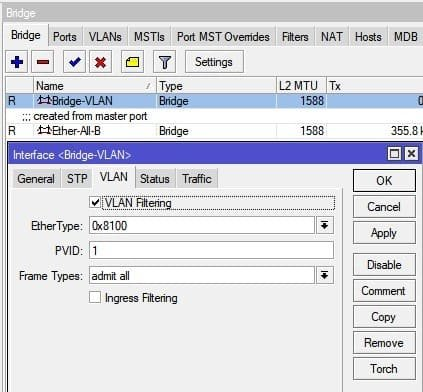
/interface bridge
add admin-mac=AA:B3:B9:A4:DE:D1 auto-mac=no name=Bridge-VLAN vlan-filtering=yes
Створення інтерфейсів VLAN
Налаштування знаходиться Interfaces→VLAN
У створеному VLAN потрібно визначити VLAN ID, а також вказати інтерфейс, на якому він буде присвоюватися. У схемі, де немає центрального Bridge, VLAN потрібно призначити на Bridge інтерфейс
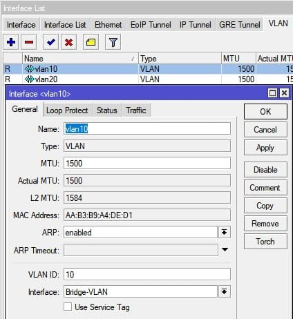
За аналогією створюються всі необхідні інтерфейси.
/interface vlan
add interface=Bridge-VLAN name=vlan10 vlan-id=10
add interface=Bridge-VLAN name=vlan10 vlan-id=20
Додавання портів до Bridge
Налаштування знаходиться Bridge→Ports
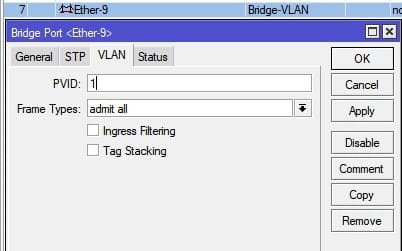

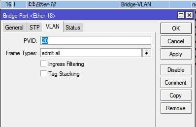
/interface bridge port
add bridge=Інтерфейс Bridge-LAN=ether9 pvid=1
add bridge=Інтерфейс Bridge-LAN=ether11 pvid=10
add bridge=Інтерфейс Bridge-LAN=ether18 pvid=20
- ether9 - тегований (trunk) порт;
- ether11 і ether18 нетеговані порти під VLAN ID=10 і VLAN ID=20 відповідно.
Визначення тегованих (trunk) та нетегованих (access) портів
Налаштування знаходиться Bridge→VLANs
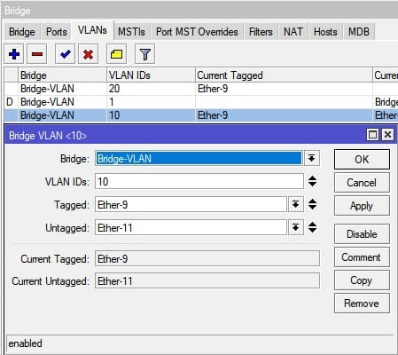
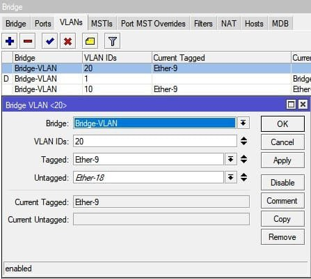
/interface bridge vlan
add bridge=Bridge-LAN tagged=ether9 untagged=ether11 vlan-ids=10
add bridge=Bridge-LAN tagged=ether9 untagged=ether18 vlan-ids=20
Налаштування VLAN між роутером\комутатором MikroTik(L3) та комутатором Cisco(L2)
Зараз досить багато пропозицій по Б\У техніці Cisco періоду 2000-2010 р.в. рази нижче за сучасний аналог. Повертаючись до VLAN між маршрутизатором або комутатором MikroTik(L3) і комутатором Cisco L2, схема підключення буде виглядати так:

Якщо описати словами схему, то:
- 5-ий порт роутера MikroTik тегований (trunk);
- Перший порт комутатора Cisco L2 тегований (trunk);
- 17-й та 33-ий порти комутатора Cisco L2 нетеговані (access).
Необхідно зняти примусовий PVID із порту на роутері MikroTik
/interface bridge port add bridge=Інтерфейс мосту=ether5 pvid=1
Визначити теговані порти
/interface bridge vlan
add bridge=Bridge-Vlan tagged=Bridge-Vlan,ether5 vlan-ids=10
add bridge=Bridge-Vlan tagged=Bridge-Vlan,ether5 vlan-ids=20
Налаштувати теговані (trunk) та нетеговані (access) порти на комутаторі Cisco L2
Попередньо комутатор Cisco 3750 скинутий до заводських налаштувань
налаштувати термінал
стерти startup-config
reload
Налаштування локальної мережі в Cisco
налаштувати інтерфейс терміналу
vlan 1
ip-адреса 192.168.1.21 255.255.255.0
ip-шлюз за замовчуванням 192.168.1.1
без
завершення роботи
Визначення trunk(тегованого\tagged) порту в Cisco
conf term
інтерфейс FastEthernet2/0/1
switchport trunk інкапсуляція dot1q
switchport режим trunk
switchport trunk дозволений vlan 1,10,20
no shutdown
end end
Визначення access(нетегованого\untagged) порту в Cisco
conf term
інтерфейс FastEthernet2/0/17
режим switchport access
switchport access vlan 20
no shutdown
interface FastEthernet2/0/33
switchport mode access
switchport access vlan 10
no shutdown
end
Збереження конфігурації в Cisco
копіювати run-config startup-config
Як перевірити роботу VLAN у MikroTik
Для перевірки роботи VLAN у маршрутизаторі MikroTik можна скористатися утилітою Torch, вказавши як інтерфейс Bridge маршрутизатора і як додатковий параметр активувати VLAD ID.
Утиліта знаходиться Tools→Torch
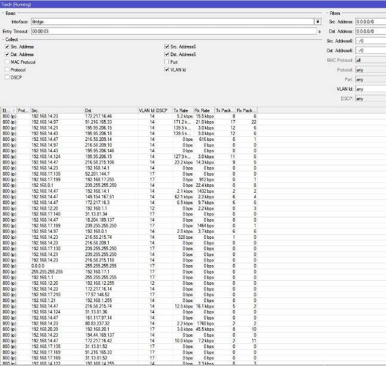